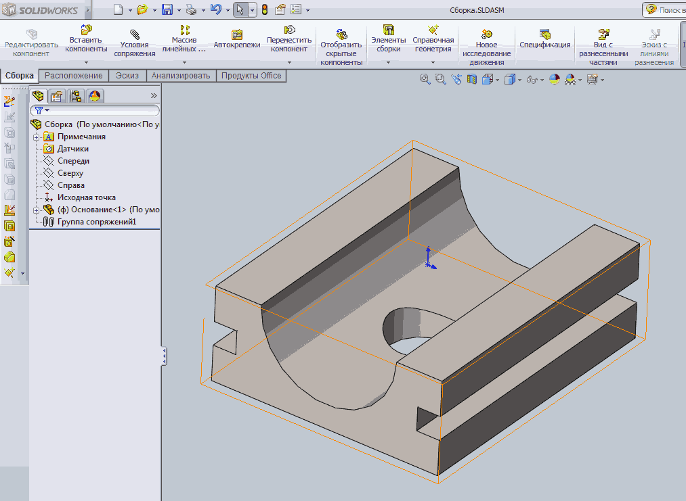
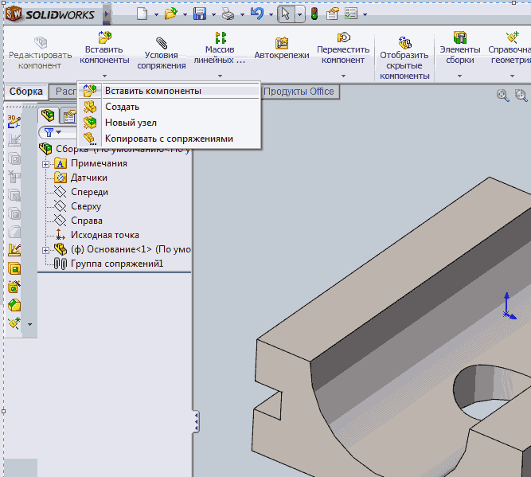
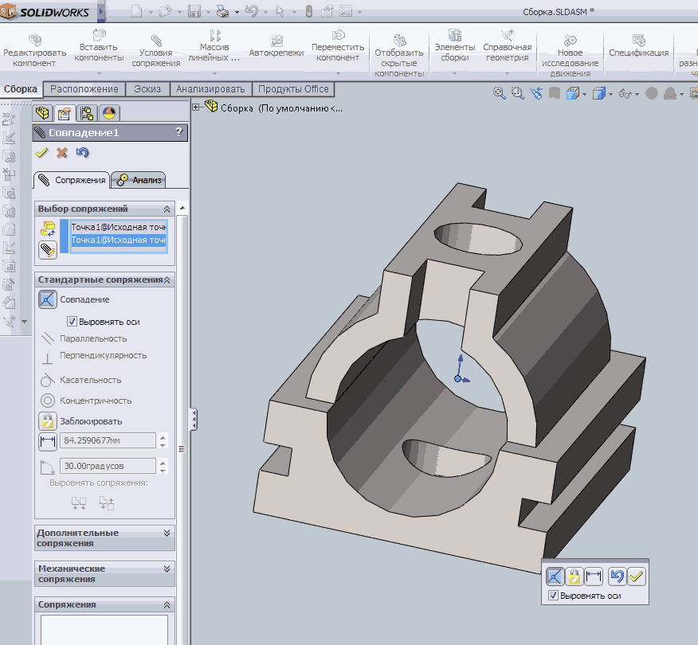

Щёлкнем по кнопке Обзор и выберем в папке деталь Основание
Сделаем щелчёк левой кнопкой мыши в исходной точке для вставки детали.

Добавим в сборку деталь Крышка.
Для этого выберем Вставить компоненты

Щёлкнем по кнопке Обзор, выберем в папке деталь Крышка и вставим её в любое свободное место, щёлкнув левой кнопкой мыши.
Для позиционирования деталей зайдем в команду Условия сопряжения.
Выберем левой кнопкой мыши исходные точки деталей, а в качестве типа сопряжения
Совпадение.

Добавим сварной шов.
Для этого на панели инструментов Сварные детали выберем команду Сварной шов и укажем кромки по которым пройдёт сварка. Катет шва примем равным 5мм.